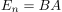

inverse Matrix
1. Definition
Sei  eine Matrix, so ist eine (die) inverse Matrix zu
eine Matrix, so ist eine (die) inverse Matrix zu  , falls eine existiert, definiert durch
, falls eine existiert, definiert durch

1
(siehe Einheitsmatrix)
Sei eine Matrix, so ist eine (die) inverse Matrix zu , falls eine existiert, definiert durch
(siehe Einheitsmatrix)